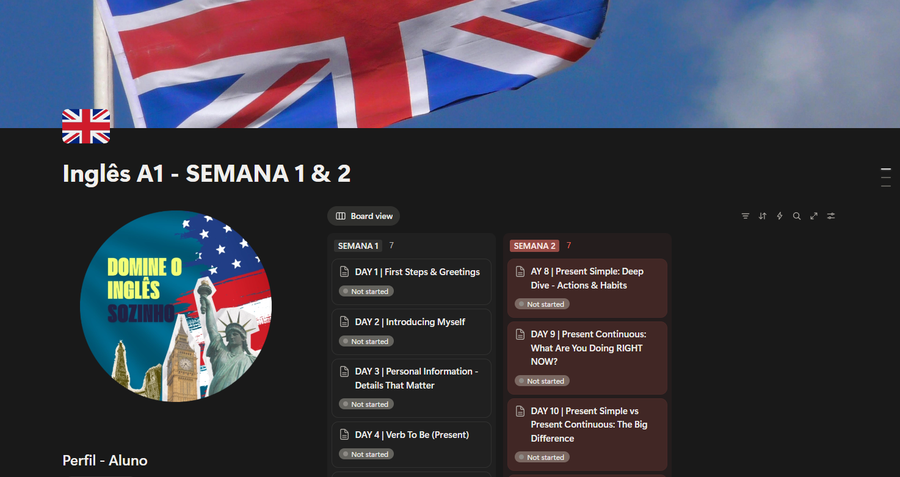
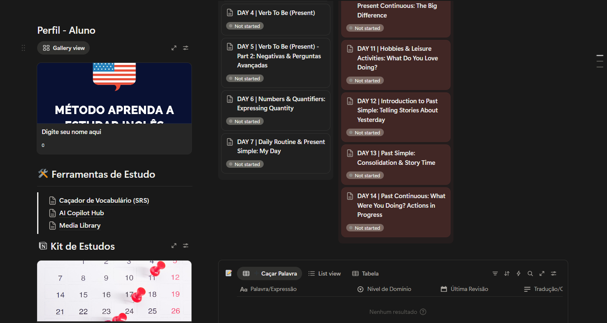
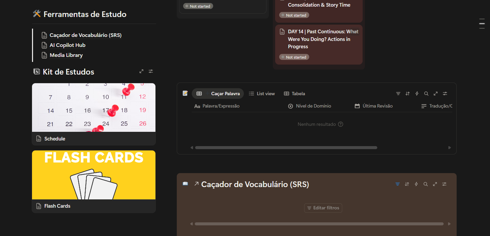
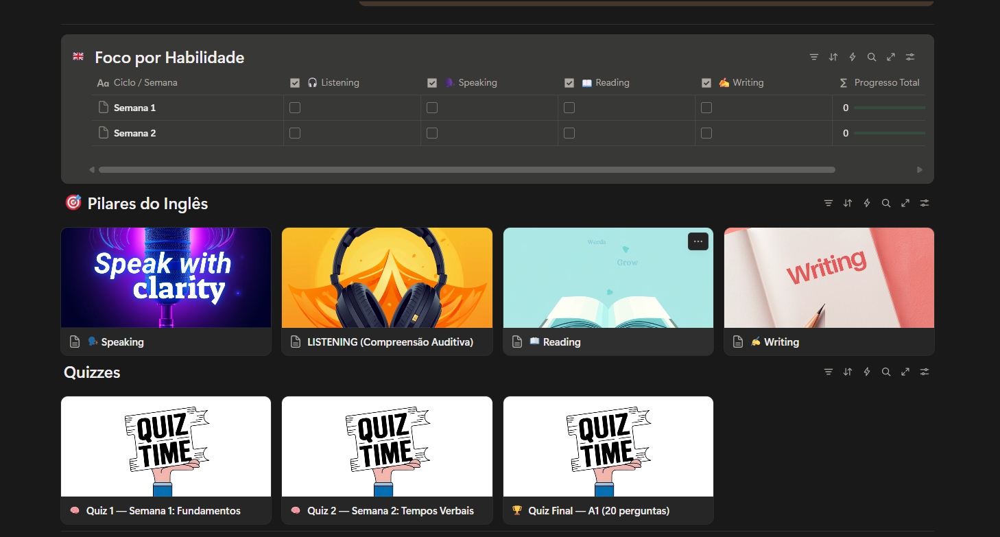
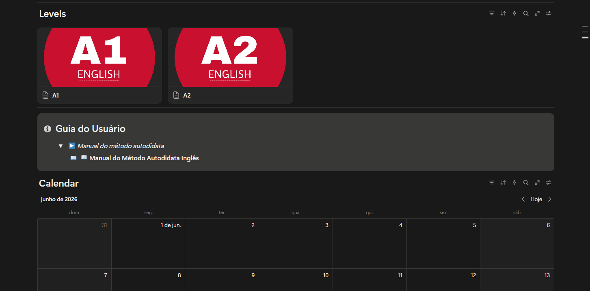

Um workspace completo no Notion com roadmap, rastreador de hábitos, cofre de vocabulário e central de recursos. Tudo organizado para você nunca mais perder o fio da meada.
Veja por dentro
Nada de template genérico. Cada página foi desenhada para quem estuda inglês de verdade.




O problema que ninguém resolve
Você não sabe o que estudar amanhã. Sem um plano claro, qualquer distração vence.
Você perde o vocabulário que aprendeu porque não tem onde guardar e revisar de forma organizada.
Não há consistência. Dias ótimos são seguidos de semanas de inatividade.
A maioria das pessoas não para de estudar inglês por preguiça. Para porque nunca teve um sistema que organizasse tudo num só lugar e mantivesse o progresso visível. Isso muda agora.
O que você recebe
Tudo no Notion, organizado, pronto para duplicar e usar hoje.

Quem já está usando
Comprei sem muita expectativa mas me surpreendi. Já tentei vários apps de inglês e nunca durei mais de duas semanas. Com o Notion organizado assim, tô no 30º dia seguido. Nunca tinha acontecido isso comigo, juro.
O cofre de vocabulário mudou tudo pra mim. Antes eu anotava palavra em papel e nunca revisava. Agora tá tudo no Notion com revisão espaçada e o negócio realmente fica na cabeça. Vale bem mais do que paguei.
Eu ficava pulando de recurso em recurso sem saber se tava no caminho certo sabe? O roadmap resolveu isso. Agora sei exatamente o que tô fazendo e por quê. A sensação de progredir de verdade é diferente demais.
Uso Notion no trabalho todo dia e nunca pensei em usar pra estudar inglês. A Central de Recursos tem material gratuito que eu nem sabia que existia. Tô usando faz um mês e ainda to descobrindo coisa nova. Recomendo demais.
Acesso vitalício
Acesso vitalício ao workspace completo no Notion. Uma compra, para sempre.
Você recebe as primeiras 2 semanas de conteúdo assim que a compra é confirmada. Já dá pra começar hoje.
O restante do conteúdo vai sendo liberado gradualmente, no ritmo certo para você absorver sem pular etapas.
Prefiro liberar junto com o seu ritmo de estudos. Assim você não recebe tudo de uma vez e acaba não usando nada.
Acesse o sistema, explore tudo e, se por qualquer motivo não gostar, é só me chamar em até 7 dias. Devolvo 100% do valor sem burocracia e sem perguntas.
Dúvidas frequentes
Não. O sistema foi construído para funcionar 100% no plano gratuito do Notion. Você só precisa criar uma conta gratuita (se ainda não tiver) e duplicar o workspace para o seu perfil. Zero custo extra.
Imediatamente após a confirmação do pagamento você recebe o link de acesso por e-mail. É só clicar em "Duplicar página" no Notion e o sistema estará no seu workspace em segundos.
Para qualquer nível, do iniciante ao avançado. O roadmap se adapta à sua fase atual. O cofre de vocabulário e o rastreador de hábitos funcionam independentemente do nível. Você personaliza o sistema do jeito que precisar.
É uma compra única, sem mensalidade. O sistema fica no seu Notion para sempre. Além disso, todas as atualizações futuras que eu fizer no template são enviadas gratuitamente para quem já comprou.
Risco zero. Você tem 7 dias para explorar o sistema. Se não gostar por qualquer motivo, é só pedir o reembolso. Devolvo 100% do valor sem perguntas.
Pronto para organizar seus estudos de uma vez por todas?
GARANTIR MEU ACESSO AGORA